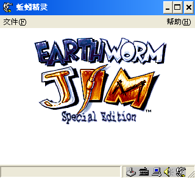
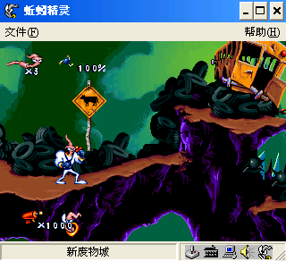
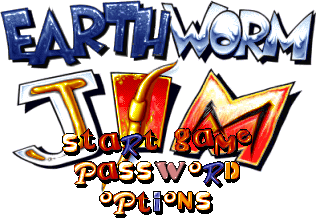

名稱：蚯蚓吉姆1／蚯蚓精靈 (Earthworm Jim，簡中／英文版)
簡介：Shiny 1994年出品的動作射擊遊戲，1996年移植至DOS，由Activision代理發行。1998
年增加關卡並移植Windows，推出「特別版（Special Edition）」，1999年由金仕達
簡中化並代理發行 [待補]。



備註：本版為簡中Windows特別版
保護：Windows版無保護，DOS版為光碟，破解碼（放入光碟才有背景音樂）：
EWJ1.EXE
0F 84 EE 00 00 00 E8 D3 3B FF FF 98 85 C0 0F 84 E0 00 00 00
90 90 90 90 90 90 -- -- -- -- -- -- -- -- 90 90 90 90 90 90
74 1B 0F BE
EB -- -- --
74 1F 0F BE
EB -- -- --
74 31 0F BE
EB -- -- --
備註：簡中版建議在簡中系統上執行，否則部份文字會亂碼。
檔案：ewj-dos.rar = 1996英文DOS版